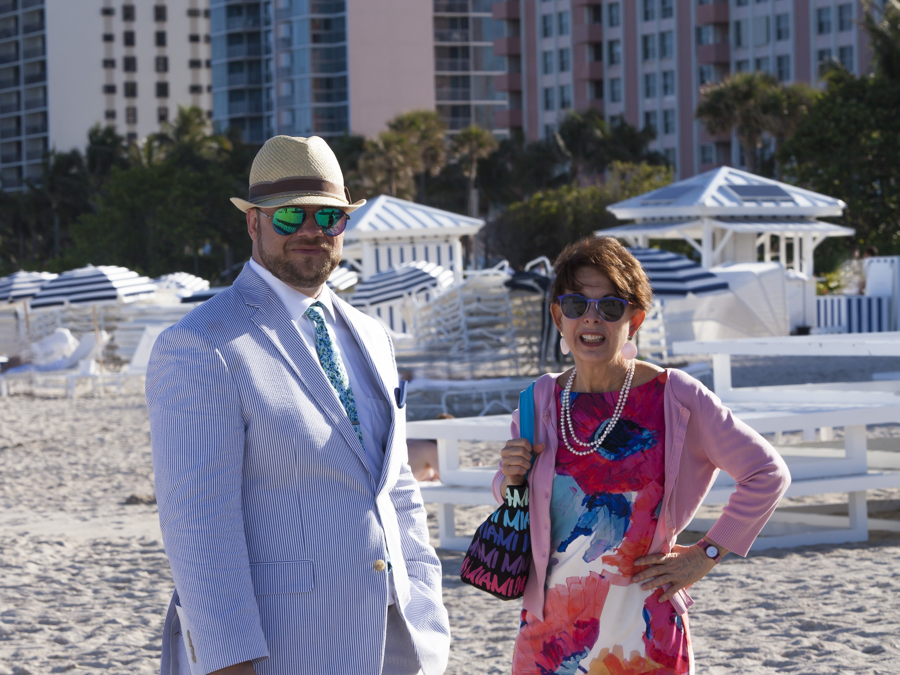
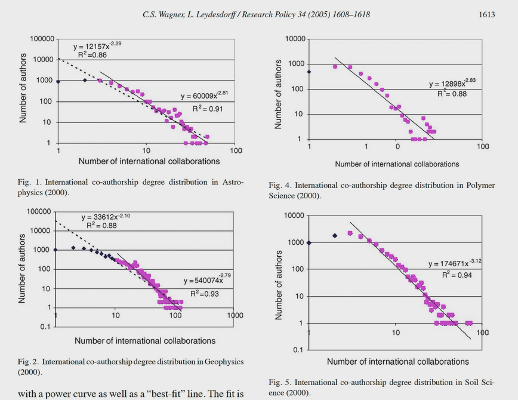
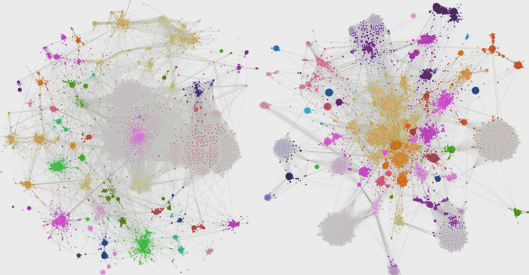

Remembering My Dissertation Advisor, Caroline S. Wagner
Pioneer of networks in science and technology policy
My dissertation advisor was Caroline S. Wagner. Her final appointment was Emeritus Faculty at The Ohio State University where I received my Ph.D. in public policy and management under her guidance. She had a long and interesting career as a policy analyst working in government, academia, and think tanks.1 She worked for the RAND Corporation as deputy director of the Science and Technology Policy Institute, the federally funded research center serving the White House Office of Science and Technology Policy. She also worked as a staff member for the U.S. Congress, was stationed abroad with the State Department as an economic advisor, and may or may not have worked in classified roles for the United States as well.

Before I met her she was more of a practitioner-style analyst. She had made the transition into academia, earning her Ph.D. under Loet Leydesdorff at the University of Amsterdam. Moving from working on practical policy needs to basic policy science is no easy frame shift and it takes a truly gifted mind to do so. After she finished her studies with Leydesdorff, she gained a faculty appointment at Penn State and later moved to Ohio State in 2011. A year later I started my doctoral studies at the John Glenn School of Public Affairs at OSU, which would later become the John Glenn College.
I remember I first got to know Caroline because she sent out an open invitation to all the graduate students in the John Glenn School asking if we were interested in a co-authorship opportunity working on a manuscript she had been developing around science policy. As a grad student, you are generally looking for ways to publish. I had no knowledge or experience in science policy, bibliometrics, or network analysis. In fact, at the time, my focus was on the philosophy of public administration. I had never and still have never heard of a professor being so open to collaborating with students that they send out blanket invitations like this. I would later learn that this fit perfectly with the ideals of open science, which she both preached and practiced. Responding to the invitation turned out to be a great instinct, because it marked the start of my career as a science policy researcher.
Caroline is primarily known for advancing the concept of the "invisible college" by applying network science to understand global scientific and technological research collaboration.2 Leveraging theory from complexity science, she made major contributions to our understanding of the social drivers of the emerging global network of science and technology, particularly around the concepts of self-organization and preferential attachment.3
Preferential attachment is a social dynamic that takes hold in social networks of all types. It is colloquially understood as the rich-get-richer dynamic, i.e., the “Matthew effect.” Preferential attachment is one of a handful of mechanisms ubiquitous in social networks that have gained virtual law-like status in social science. Social networks, left untouched, will produce highly unequal distributions, across a variety of metrics, whether popularity or wealth. The idea is that advantage tends to accumulate more advantage. The same holds in scientific networks, since scientists, at the end of the day, are also humans.
I remember the first meeting I had with Caroline about social network analysis. I was an aspiring public philosopher with very little quantitative or scientific skill at the time. But I was interested in learning more about social networks and the idea that studying scientists and researchers could be of value to public policy and administration. I remember her trying in vain to explain the log-log plot that scholars at the time used as evidence for preferential attachment in social networks3 (see figure below: if the degree distribution approximates a straight line on a log-log plot, this is evidence of a power law at work). At the time, I didn’t have the literacy to understand what she was trying to teach me. But Caroline cared so much and she rooted it in such an interesting mix of concepts from complexity science (which I also had never heard of before) that I knew I had to keep working with her.

We ended up producing several peer-reviewed academic journal articles over the next decade, from research collaboration networks of Nobel laureates,4 to analyzing the policy effects on semiconductor alliance formation,5 to the advancement of national openness as a relevant variable in scientific advancement,6 to the effects of democracy on scientific impact,7 to the development of metrics for measuring national research capacity.8
The figure below shows the research collaboration networks of Nobel laureates in Physiology or Medicine compared to a matched group of elite scientists. This was the first paper I published with Caroline. It combined network analysis, bibliometrics, and insights from science policy, and itself also represented an international collaboration with colleagues in the Netherlands and Sweden.

One of the big ideas Caroline advanced was the proposition that the network of science appeared to be generating a life of its own apart from national systems.910 In the late 1990s and early 2000s, it seemed like advancement no longer depended very much on national systems, as self-organizing dynamics took hold in the global network. Further, top-down implementation of the national system of science approach in developing countries appeared to be failing on a case-by-case basis.
Despite documenting abstract dynamics like the emergence of a global research network, Caroline was also always interested in producing practical insights that could be useful to policy makers. She sought to generate insights that could help to address the pressing problems of scientific and technological advancement. Our most recent collaboration in 2024 focused on the development of an index representing national research capacity that could perhaps serve as a useful guide of sorts to policy makers.8 While this paper relied on organizing and analyzing a large number of existing metrics, she hoped that one day a major research center could produce original metrics to continuously monitor national capacity in the international science system.
Looking through her most recent work, including unfinished arXiv preprints,111213 it seemed like Caroline was beginning to reckon more with the growing reality that national politics was interfering more substantially with the global knowledge network. As has become rather obvious in recent years, the days of the free emergence of a global research system blissfully floating above major power politics are largely over. International politics has regained ground as a major explanatory variable in the shape and dynamics of global science. As she pointed out, scientists tend not to think in these terms, but nation-states maintain a consistent dual-use frame for science policy decision-making.11
I think people in my position probably like to hope that we can just carry on the work of our mentors and friends who die before we do, but it is nearly impossible to simply step into another person's mind and continue on their work. I have my understanding, and you have your understanding, we combine our insights, and hopefully something unique emerges. This is what makes it such a loss. We can't send them a text, an email, or call them up anymore to ask them how we got it right or wrong or just get their perspective.
There were a lot of new projects I wanted to include Caroline on. In this case I’ll probably regret how I let a specific norm of academic career development get in the way of further collaboration with her. Perhaps this can be a useful insight for others finding themselves in my position in the future. The conventional wisdom after one finishes their dissertation and enters the tenure track is that one must demonstrate their independence, particularly from their dissertation advisor. It was only recently that I felt that I had enough solo-authored and first-authored works of my own that I didn’t care anymore. But time lost can't be regained. By the time I got back into a position to collaborate, a very unexpected and rapidly progressing illness had run its course, and she died.
Caroline taught me how to see networks: that what matters is not just the nodes, but the connections between them, and the broader patterns that emerge from the whole. The network itself is more than the sum of its parts. Her death removes a node and a complex of ties no one can replace or reconstruct. But the rest of us can still carry forward the ideas that flowed through them, making new connections from the living artifacts left behind in the scientific record.
- Wall, J. S. (2025, July 17). Top of mind: Caroline Wagner. John Glenn College of Public Affairs, The Ohio State University. https://glenn.osu.edu/news/pa/top-mind-Wagner ↩
- Wagner, C. S. (2009). The new invisible college: Science for development. Rowman & Littlefield. ↩
- Wagner, C. S., & Leydesdorff, L. (2005). Network structure, self-organization, and the growth of international collaboration in science. Research Policy, 34(10), 1608–1618. ↩
- Wagner, C. S., Horlings, E., Whetsell, T. A., Mattsson, P., & Nordqvist, K. (2015). Do Nobel laureates create prize-winning networks? An analysis of collaborative research in physiology or medicine. PLOS ONE, 10(7), e0134164. https://doi.org/10.1371/journal.pone.0134164 ↩
- Whetsell, T. A., Leiblein, M. J., & Wagner, C. S. (2020). Between promise and performance: Science and technology policy implementation through network governance. Science and Public Policy, 47(1), 78–91. https://doi.org/10.1093/scipol/scz048 ↩
- Wagner, C. S., Whetsell, T. A., Baas, J., & Jonkers, K. (2018). Openness and impact of leading scientific countries. Frontiers in Research Metrics and Analytics, 3, Article 10. https://doi.org/10.3389/frma.2018.00010 ↩
- Whetsell, T. A., Dimand, A. M., Jonkers, K., Baas, J., & Wagner, C. S. (2021). Democracy, complexity, and science: Exploring structural sources of national scientific performance. Science and Public Policy, 48(5), 697–711. https://doi.org/10.1093/scipol/scab036 ↩
- Wagner, C. S., & Whetsell, T. A. (2024). Developing an index of national research capacity. Quantitative Science Studies, 5(4), 954–974. https://doi.org/10.1162/qss_a_00325 ↩
- Wagner, C. S., Whetsell, T. A., & Leydesdorff, L. (2017). Growth of international collaboration in science: Revisiting six specialties. Scientometrics, 110(3), 1633–1652. ↩
- Wagner, C. S., Whetsell, T. A., & Mukherjee, S. (2019). International research collaboration: Novelty, conventionality, and atypicality in knowledge recombination. Research Policy, 48(5), 1260–1270. ↩
- Wagner, C. S. (2026). The securitization of science: A systems perspective on policy and measurement (arXiv:2605.20313). arXiv. https://doi.org/10.48550/arXiv.2605.20313 ↩
- Wagner, C. S., & Cai, X. (2026). Network evolution and national interests: Global scientific reorganization and the rise of scientific nationalism (arXiv:2603.27350). arXiv. https://doi.org/10.48550/arXiv.2603.27350 ↩
- Wagner, C. S., & Simon, D. F. (2026). Research security policy needs clear guidelines. Science, 391(6791), 1187. https://doi.org/10.1126/science.aef7935 ↩